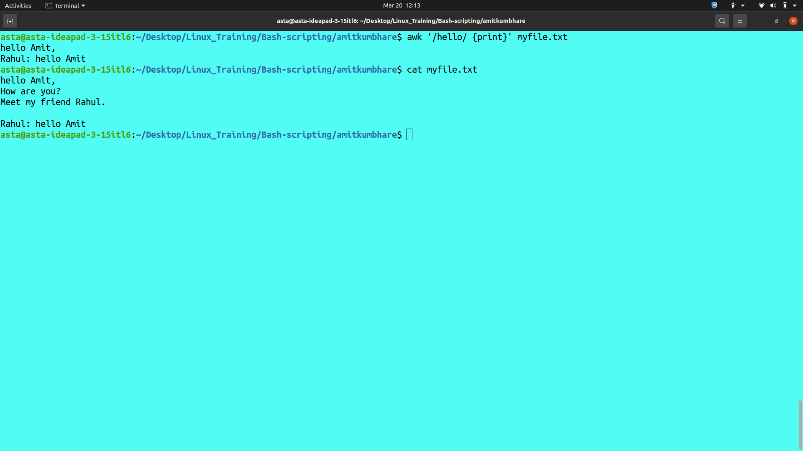
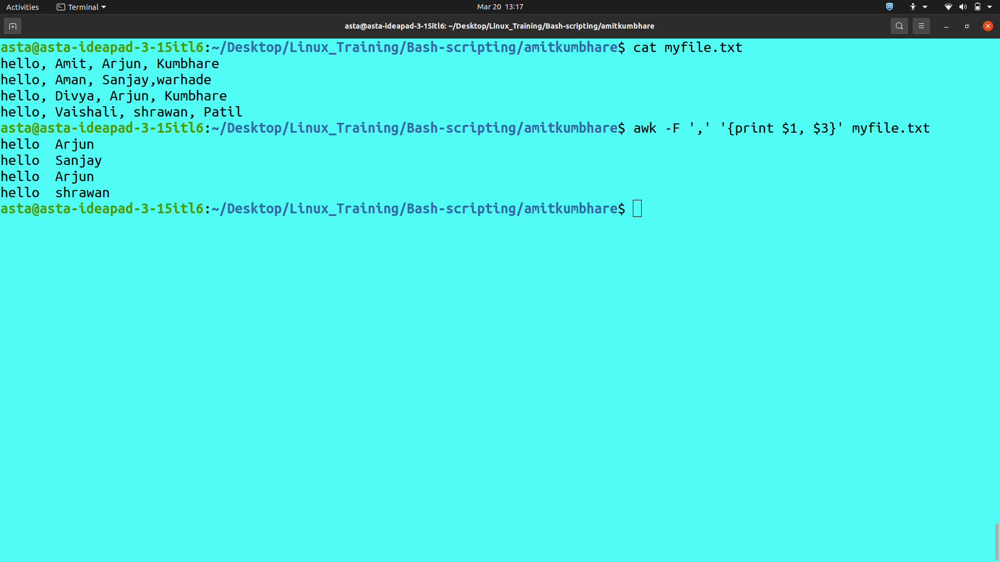
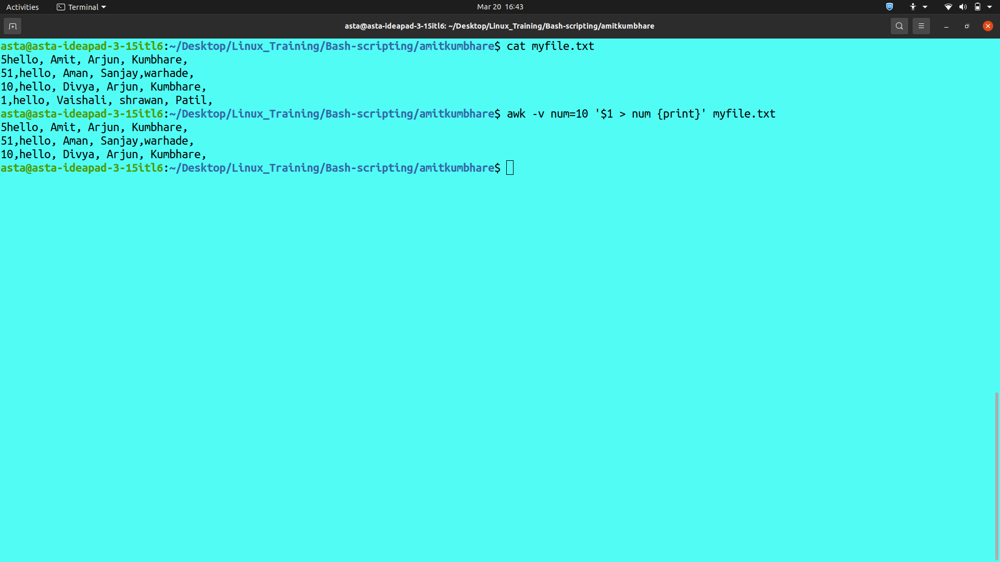
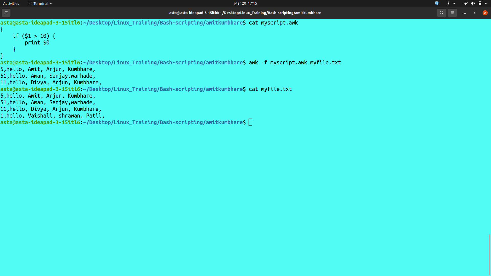
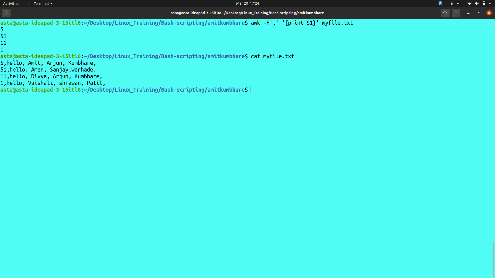
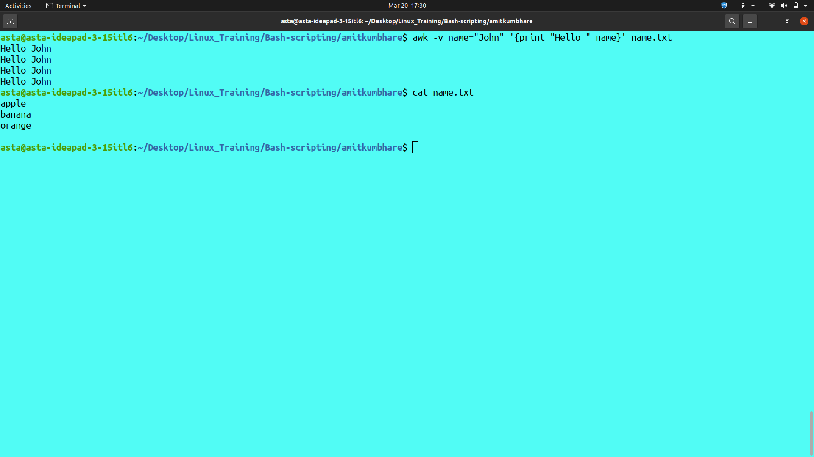
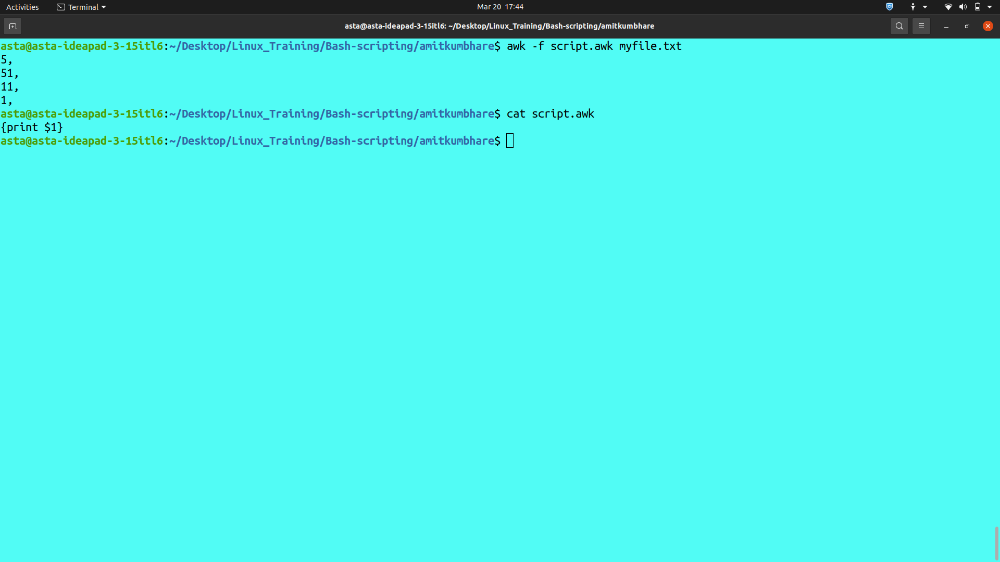
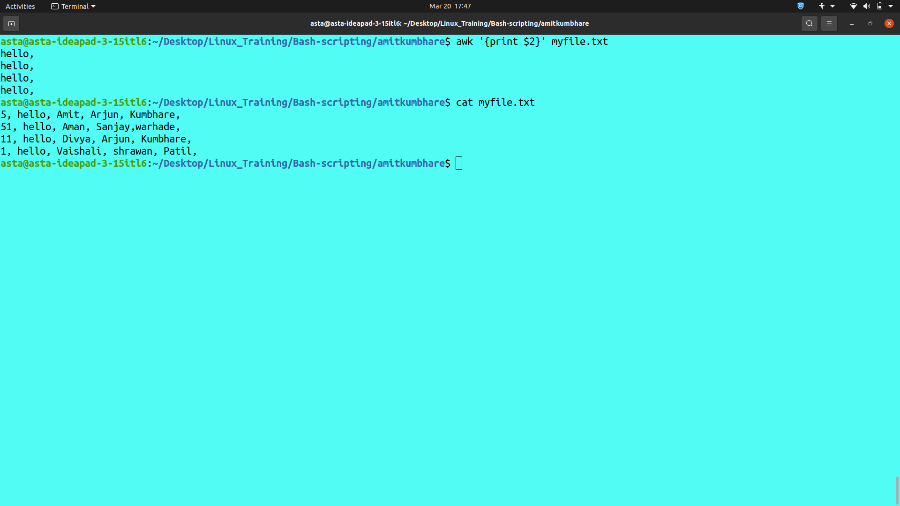
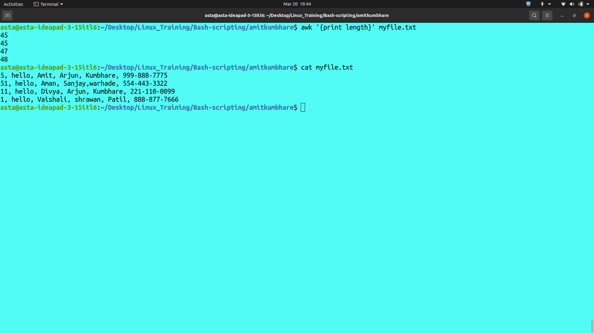
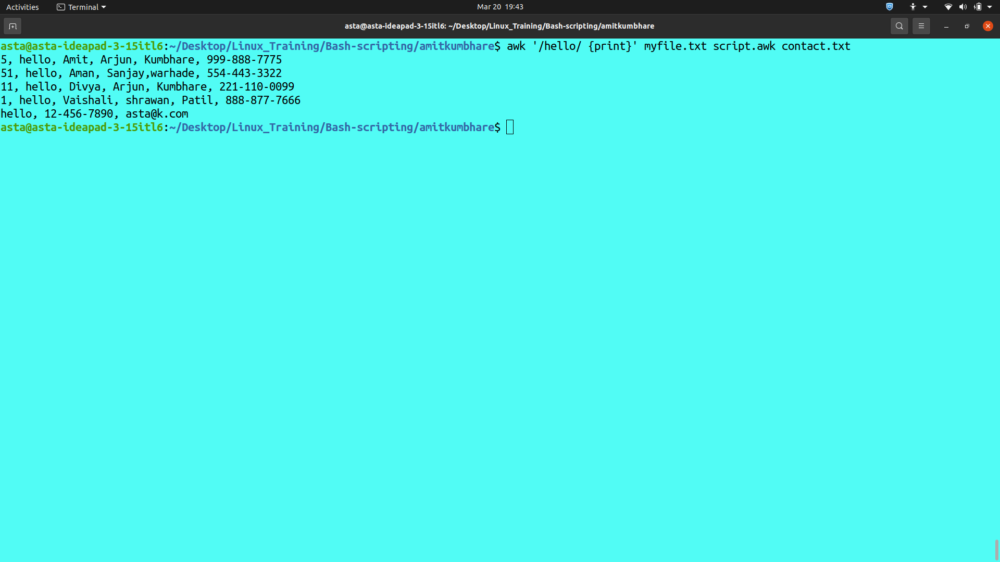

Introduction:
The awk command is a powerful utility that is used for processing text files in Linux and Unix systems. It is a versatile tool that can be used for a variety of tasks, such as data extraction, text manipulation, and reporting. In this article, we will explore the different options and advanced usage of the awk command.
Basic Usage:
The basic syntax of the awk command is as follows:
awk [options] 'pattern {action}' file
Here, pattern is a regular expression that matches the text you want to process, and action is a set of commands that will be executed when the pattern is found. The file parameter specifies the name of the file to be processed.
For example:
The following command will print all lines in a file that contain the word "hello":
awk '/hello/ {print}' myfile.txt

Explainiation:
The command awk '/hello/ {print}' myfile.txt
`awk`: This is the command to invoke the awk utility.`'/hello/`: This is the pattern to search for. The forward slashes indicate that "hello" is a regular expression. In this case, it matches any line that contains the string "hello".`{print}`: This is the action to perform when a line matching the pattern is found. In this case, it simply prints the line to the standard output.`myfile.txt`: This is the name of the file to be searched.
So, when you run this command, awk will search the myfile.txt file for any lines containing the string "hello", and then print those lines to the standard output. Any other lines in the file will be ignored.
Options:
The awk command provides several options that can be used to customize its behavior. Here are some of the most commonly used options:
`-F`: This option is used to specify the field separator. By default, awk uses whitespace as the field separator, but you can use the -F option to specify a different separator.`For example`, the following command will use a comma as the field separator:
awk -F ',' '{print $1, $3}' myfile.txt

`-v`This option is used to define variables that can be used in the awk script.`For example`, the following command will print all lines in a file that contain a number greater than a specified value:awk -v num=10 '$1 > num {print}' myfile.txt

`-f`This option is used to specify the name of an awk script file that contains the awk commands.`For example`, the following command will execute the commands in the file named myscript.awk:awk -f myscript.awk myfile.txt
`-F fs`: This option specifies the field separator for the input file. By default, awk uses whitespace as the field separator, but this option can be used to specify a different separator.`For example`, if we want to use a comma as the field separator, we can use the following command:awk -F',' '{print $1}' myfile.txt

In this command, we are using -F',' to specify a comma as the field separator. The awk command will print the first field of each line in the file.
`-v var=value`: This option defines a variable that can be used in the awk script. The variable is assigned a value before the script is executed.`For example`, if we want to print the value of a variable named "name", we can use the following command:awk -v name="John" '{print "Hello " name}' myfile.txt

In this command, we are using -v name="John" to define a variable named "name" with a value of "John". The awk command will print "Hello John" for each line in the file.
`-f progfile`: This option specifies the name of an awk script file that contains the awk commands.`For example`, if we have a script file named "script.awk" that contains the following command:# {print $1}
We can execute the script using the following command:
# awk -f script.awk myfile.txt
In this command, we are using -f script.awk to specify the name of the script file. The awk command will execute the script on each line in the file and print the first field of each line.
`'prog'`: This option specifies the awk commands directly on the command line instead of in a separate file.`For example`, if we want to print the second field of each line in the file, we can use the following command:awk '{print $2}' myfile.txt

In this command, we are using '{print $2}' to specify the awk command directly on the command line. The awk command will print the second field of each line in the file.
`--source`: This option prints the awk program that is generated by the script or command.`For example`, if we have a script file named "script.awk" that contains the following command:# {print $1}
- We can use the following command to print the awk program generated by the script:
awk --source -f script.awk

In this command, we are using --source to print the awk program generated by the script.
Advanced Usage:
The awk command provides many advanced features that can be used to perform complex text processing tasks. Here are some examples:
`Using Built-in Functions`: Awk provides a number of built-in functions that can be used to perform various text processing tasks.`For example`, the following command will print the length of each line in a file:
awk '{print length}' myfile.txt

`Processing Multiple Files`: Awk can be used to process multiple files at once.`For example`, the following command will print all lines in multiple files that contain the word "hello":awk '/hello/ {print}' file1.txt file2.txt file3.txt
